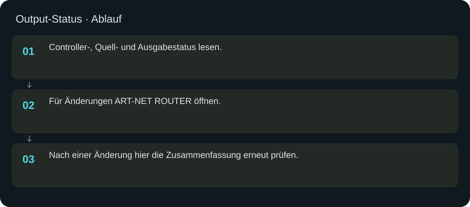
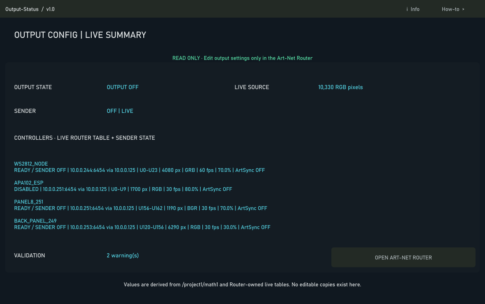

Output-Status
Schreibgeschützte Zusammenfassung der aktuellen Art-Net-Ausgabe.
In welcher Reihenfolge?
- Controller-, Quell- und Ausgabestatus lesen.
- Für Änderungen ART-NET ROUTER öffnen.
- Nach einer Änderung hier die Zusammenfassung erneut prüfen.


Schritt für Schritt
Ein Status, eine Konfiguration
Diese Ansicht ist keine zweite Senderkonfiguration. Änderungen erfolgen im Art-Net Router. Damit verhindern sich widersprechende alte und neue Ausgangseinstellungen keine konsistente Anzeige.
Beispiel
Bei einer schwarzen Schrankvorschau zunächst Quelle und Mapping prüfen. Bei gültiger Vorschau, aber dunkler Hardware Router-Freigabe, Senderstatus und Controllerziel prüfen. Die Statusanzeige allein belegt keine physische Lichtausgabe.
Eingaben & Beispiele
Dieser Bildschirm benötigt für den beschriebenen Prüfablauf keine Texteingabe.
Woran erkenne ich Erfolg?
Die erwartete Ansicht öffnet, Status und Vorschau entsprechen der gewählten Aktion, und es erscheint kein Fehler. Änderungen beim nächsten Laden beziehungsweise im Live-Status erneut lesen. Ein erfolgreicher Bildschirmtest beweist weder physische LED-Ausgabe noch korrekte Kameramessung.
Quellennachweis
Dateipfade im Projekt-Repository; die Onlinehilfe gibt keinen allgemeinen Dateisystemzugriff frei.
pixelblaze_mapper/build_phase2_output_ui.pypixelblaze_mapper/router_status_source.py
Dialog: /project1/pixelblaze_mapper/output_config/ui_panel